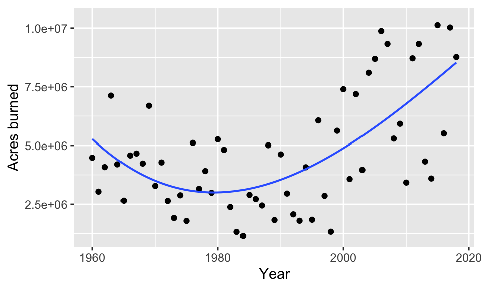

wildfires <- read.csv("https://aloy.github.io/stat230-materials/data/wildfires.csv")Polynomial Regression
Loading data
To load the wildfires data set, run the following code chunk:
Fitting a polynomial regression model
To fit a polynomial regression model we still use the lm() command, but we expand our formula to include polynomial terms. To include polynomial terms in a regression model, we need to use the I() function to indicate that we want to calculate a polynomial term. For example, to fit the quadratic model we have already discussed in class, we use the following code:
quadratic_lm <- lm(Acres ~ Year + I(Year^2), data = wildfires)Once you have your fitted model, we can explore it like we have with simple linear regression models.
Exploring a cubic model
Let’s fit a cubic model to the wildfires data set. The cubic model has the form \[\mu \lbrace y | x \rbrace = \beta_0 + \beta_1 x + \beta_2x^2 + \beta_3x^3.\] Use the lm() command to fit the cubic model where Year is used to predict Acres.
TipSolution
cubic_lm <- lm(Acres ~ Year + I(Year^2) + I(Year^3), data = wildfires)To plot the fitted cubic model, you can use the gf_point() and gf_lm() functions from the ggformula package. The following code will create a scatter plot of the data and add the fitted cubic regression line:
gf_point(Acres ~ Year, data = wildfires, xlab = "Year", ylab = "Acres burned") |>
gf_lm(formula = y ~ poly(x, 3), linewidth = .5)Warning: Using the `size` aesthetic with geom_line was deprecated in ggplot2 3.4.0.
ℹ Please use the `linewidth` aesthetic instead.
Note
In the gf_lm() layer we use the poly(x, 3) function to specify that we want to fit a cubic polynomial. You can use poly() to fit polynomials of any degree by changing the second argument, and you can also use this function within the lm() function to fit polynomial regression models if you’d like.
Does the cubic model appear to be necessary? Use the summary() function to explore the fitted model and run a hypothesis test for the cubic term. What do you conclude?
TipSolution
The t-test for \(H_0: \beta_3 = 0\) vs. \(H_a: \beta_3 \neq 0\) shows that this term is not statistically significant, so we do not have sufficient evidence to conclude that the cubic term is necessary in our model.
summary(cubic_lm)
Call:
lm(formula = Acres ~ Year + I(Year^2) + I(Year^3), data = wildfires)
Residuals:
Min 1Q Median 3Q Max
-4042634 -1462388 -220730 1720630 3904566
Coefficients:
Estimate Std. Error t value Pr(>|t|)
(Intercept) 3.320e+11 5.078e+11 0.654 0.516
Year -4.928e+08 7.660e+08 -0.643 0.523
I(Year^2) 2.437e+05 3.851e+05 0.633 0.530
I(Year^3) -4.015e+01 6.454e+01 -0.622 0.536
Residual standard error: 1920000 on 55 degrees of freedom
Multiple R-squared: 0.4247, Adjusted R-squared: 0.3933
F-statistic: 13.54 on 3 and 55 DF, p-value: 9.971e-07What degrees of freedom did R for the t-distribution used to calculate the p-value for the test of the cubic term?
TipSolution
The test uses df = n - (3 + 1) = 55.
Do you notice anything curious about the inferential results for the linear and quadratic terms?
TipSolution
Yes! All of the polynomial terms are not statistically significant, even though the linear and quadratic terms were in the previous model.
The issue here is that the polynomial terms for year are highly correlated with each other (i.e., year, year\(^2\), and year\(^3\) are correlated). This can lead to numerical instability and make it difficult to interpret the coefficients. This is a situation called multicollinearity. We’ll talk more about this later. One way to remedy this issue in polynomial regression is to use orthogonal polynomials, which are uncorrelated with each other.
An alternative way to fit polynomials
To fit polynomial model with uncorrelated polynomial terms use the poly() function. For example, to fit a cubic model using orthogonal polynomials, we can run the following code:
cubic_lm_ortho <- lm(Acres ~ poly(Year, 3), data = wildfires)Use the summary() function to explore the fitted model. What do you notice about the inferential results for the linear, quadratic, and cubic terms? How does this compare to the previous cubic model we fit? How does it compare to the quadratic model?
TipSolution
Using an orthogonal polynomial via poly() results in the linear and quadratic terms being statistically significant, which is in line with what we saw in the quadratic model. The cubic term is not statistically significant, so we have no evidence that it is needed.
cubic_lm_ortho <- lm(Acres ~ poly(Year, 3), data = wildfires)
summary(cubic_lm_ortho)
Call:
lm(formula = Acres ~ poly(Year, 3), data = wildfires)
Residuals:
Min 1Q Median 3Q Max
-4042634 -1462388 -220730 1720630 3904566
Coefficients:
Estimate Std. Error t value Pr(>|t|)
(Intercept) 4641410 250012 18.565 < 2e-16 ***
poly(Year, 3)1 9025270 1920377 4.700 1.79e-05 ***
poly(Year, 3)2 8177004 1920377 4.258 8.11e-05 ***
poly(Year, 3)3 -1194695 1920377 -0.622 0.536
---
Signif. codes: 0 '***' 0.001 '**' 0.01 '*' 0.05 '.' 0.1 ' ' 1
Residual standard error: 1920000 on 55 degrees of freedom
Multiple R-squared: 0.4247, Adjusted R-squared: 0.3933
F-statistic: 13.54 on 3 and 55 DF, p-value: 9.971e-07The method of constructing the polynomial terms in our regression model does not change our predictions, but it can change the inferential results for the polynomial terms.
Function quick reference
The following table summarizes the functions we learned today:
| Function | Purpose |
|---|---|
lm(formula, data) |
Fit a linear model. For polynomial regression the formula should include polynomial terms or use poly(). |
I() |
Used to create polynomial terms in a regression model |
poly(x, degree) |
Create orthogonal polynomial terms |